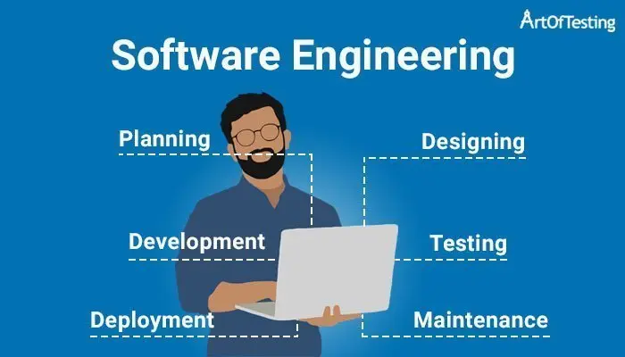
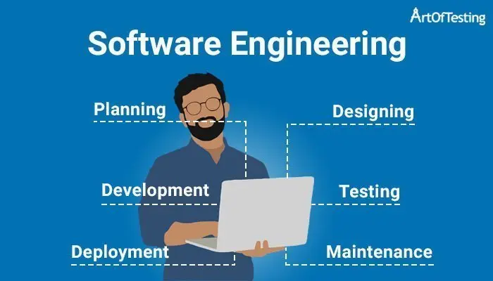

Saya Sandi nur alamsyah lulusan SMKN 1 Tambun Utara jurusan teknik elektronika industri. Saya terlahir dari keluarga sederhana.Bapak saya adalah seorang pengusaha dibidang jasa las industri.
Dari kecil saya selalu diajak untuk membantu pekerjaan bapak saya, baik dirumah saat perakitan maupun di tempat konsumen saat pemasangan.
Dari dulu sudah terbiasa dengan pekerjaan yang menguras tenaga.disisi lain saya juga memiliki minat tentang pemrograman, web develop, aplikasi develop, dan game develop
1. Saya pernah PKL di PT.Alcomex yang bergerak dibidang jasa kontributor holo alumunium selama 3 bulan. disana pada hari pertama saya ditempatkan ke line pemotongan holo alumunium, lalu saya dipindahkan ke line penyedia kertas packing, selain itu saya juga mem-packing barang, menaruh barang, dll.
2. saat masih sekolah di SMKN 1 Tambun Utara,dikelas 12, mengadakan uji komptensi keahlian (UKK) sesuai jurusan masing-masing soal UKK jurusan teknik elektronika industri pada awalnya adalah membuat rangkaian sistem traffic light berbasis Atmega 16, pada saat itu saya sudah mempersiapkan diri dengan latihan dan memahami layout, pemrograman Atmega 16,dan perakitan sistem traffic light.
Tetapi beberapa hari menuju UKK, ada perubahan soal UKK traffic light menjadi soal membuat power supply 15v (PSU), walaupun begitu saya harus mempelajari dan memahami soal UKK yang baru.
pada akhirnya saya berhasil menyelesaikan UKK dengan lancar di software (membuat skema dan layout), hardware (perakitan PSU), maupun pengujian PSU.lalu masuk ke jajaran predikat SANGAT KOMPETEN dari ±60 siswa kelas 12 jurusan teknik elektronika industri
Saya lulusan SMKN 1 Tambun Utara jurusan teknik elektronika industri, disana saya mempelajari banyak ilmu tentang elektronika diantaranya, yaitu :
membaca skema ataupun layout,menggambar skema dan layout berbasis software ISIS dan ARES, atau PROTEUS, juga mempelajari sistem Otomasi berbasis pneumatic.
lalu teknik percetakan PCB dimulai dari perencanaan ide dan desain,membuat skema dan layout dengan software ISIS, ARES, lalu melakukan printing desain. kemudian proses Etching.yaitu: sablon/attach layout pada PCB ,kemudian melarutkan lapisan tembaga dengan cairan H2O2, HCL, dan air hingga menyisakan lapisan tembaga layout saja .lalu pengeboran di setiap titik letak kaki komponen,lalu proses perakitan dengan solder hingga menjadi perangkat yang utuh.pengujian quality control terhadap perangkat yang dibuat dengan menguji tegangan dan arus input, internal, dan output
 
